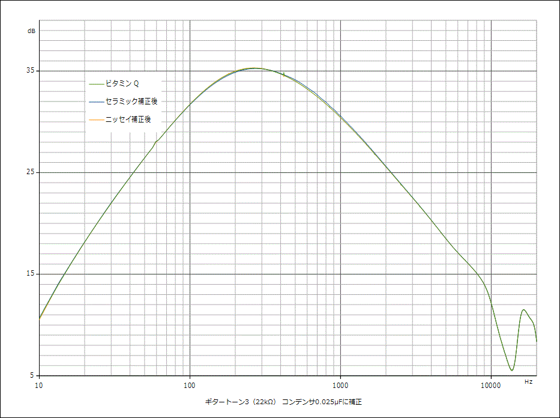

コンデンサで音は変わるのか ギタートーン編
2017年03月14日 カテゴリー：○○で音は変わるのか
※他の測定でわかった通り、歪率や周波数特性の測定はあまり意味がない気がしますが、失敗例として記事にしていこうと思います。音の変化には歪率や周波数特性以外の何らかの特性が関係していて、それは結局自分の耳で確かめるしかないのだろうと思います。
「擬似ギター出力」を使って、ギタートーンに使われるコンデンサの比較を行いました。コンデンサは以下の4種類です。
・東一電機 ビタミンQレプリカ オイルペーパーコンデンサ 1000V（1個600円?） 実測値0.0255μF
・Garrettaudio セラミックコンデンサ 50V（1個15円） 実測値0.0218μF
・（たぶん）ニッセイ電機 ポリエステルフィルムコンデンサ（1個10円） 実測値0.0239μF
・SBE Orange Drop 715P ポリプロピレンフィルムコンデンサ 600V（1個190円） 実測値0.0237μF
普通のギタートーン回路のように、下図の通り接続します。トーンポットは500kΩAカーブのものを想定して、フルの場合（抵抗値470kΩ）と3割ぐらいの場合（抵抗値22kΩ）で測定しました。
▽音源 トーン3（22kΩ）
【1.wav】 【2.wav】 【3.wav】 【4.wav】
それぞれがどのコンデンサなのか、よかったらテストしてみてください。正解は、この記事の最後の方にあります。
▽結果1 ギタートーン10（470kΩ） ※今回から表計算ソフトで処理
全く重なっています。歪率も特に違いはなさそうです。
▽結果2 ギタートーン3（22kΩ）
静電容量の違いのせいだと思いますが、ビタミンQとセラミックは少しズレがあります。また、セラミックコンデンサでは歪率が悪化しています。
セラミックコンデンサとニッセイのコンデンサに下写真のフィルムコンデンサを並列に追加して、静電容量を約0.025μFに補正しました。
▽結果3 ギタートーン3（22kΩ） 静電容量補正後

当たり前かもしれませんが、ほとんど重なりました。
音源の正解→こちら（それぞれの波形の画像です）
波形をよく見ると所々違っていますが、残念ながら私は違いを聴き取れませんでした……